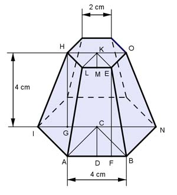
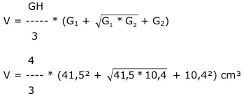

Aufgabe 254 Wie groß sind das Volumen V und die Oberfläche O des Pyramidenstumpfes mit regelmäßigen Sechsecken als Grund- und Deckfläche?  Satz von Pythagoras im Dreieck ADC: AC = 4 cm = AB AD = 4 cm/2 = 2 cm AC² = AD² + DC² | - AD² DC² = AC² - AD² = 4² cm² - 2² cm² = 12 cm² |√ DC = 3,46 cm AB * DC 4 cm * 3,46 cm 1 = 6 * --------- = 6 * ----------------- = 41,5 cm² 2 2 Satz von Pythagoras im Dreieck LMK: LK = 2 cm = LE LM = 2 cm/2 = 1 cm LK² = LM² + MK² |-LM² MK² = LK² - LM² = 2² cm² - 1² cm² = 3 cm² |√ MK = 1,73 cm LE * MK 2 cm * 1,73 cm G2= 6 * --------- = 6 * ----------------- = 10,4 cm² 2 2 Pyramidenstumpf:  4 V = --- * (41,5 + 20,8 + 10,4) cm³ 3 V = 96,9 cm³ O = G1 + G2 + M Satz von Pythagoras im Dreieck IGH: IN = 2 * AB = 2 * 4 cm = 8 cm HO = 2 * NE = 2 * 2 cm = 4 cm IN - HO 8 cm - 4 cm IG = --------- = ------------- = 2 cm 2 2 IH² = IG² + GH² = 2² cm² + 4² cm² = 20 cm² |√ IH = 4,47 cm Satz von Pythagoras im Dreieck FBE: IH = BE AB - LE 4 cm - 2 cm FB = --------- = ------------- = 1 cm 2 2 BE² = FB² + FE² |-FB² FE² = BE² - FB² = 4,47² cm² - 1² cm² = 19 cm² |√ FE = 4,36 cm AB + LE O = 41,5 cm² + 10,4 cm² + 6 * --------- * FE 2 4 cm + 2 cm O = 41,5 cm² + 10,4 cm² + 6 * ------------- * 4,36 cm 2 O = 41,5 cm² + 10,4 cm² + 78,5 cm² = 130,4 cm²